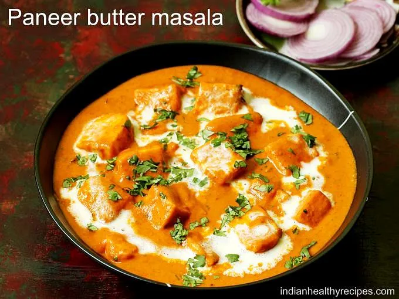

Paneer Masala

Lovely image of Paneer Masala
Ingredients
- Tomatoes
- Onions
- Ginger/Garlic
- Cashews
- Ground Spices
- Butter
- Cream (Option)
Steps
- Prepare the base: Chop the onions and tomatoes. Soak cashews in warm water for 10–15 minutes, then grind them into a smooth paste. Crush or finely chop ginger and garlic.
- Cook the onions: Heat butter in a pan, add the chopped onions, and sauté until golden brown. This step builds the sweetness and depth of the gravy.
- Add aromatics and tomatoes: Stir in the ginger-garlic, let the raw smell fade, then add chopped tomatoes. Cook until the tomatoes soften and blend with the onions.
- Blend into a smooth gravy: Once cooled slightly, blend the onion-tomato mixture with the cashew paste into a silky puree. This gives paneer masala its rich and creamy body.
- Simmer with spices: Return the puree to the pan, add ground spices (turmeric, chili powder, coriander, garam masala, etc.), and let it cook in butter until the oil separates. Add a little water if too thick.
- Finish the gravy: Stir in cream (optional, for extra richness) and adjust the consistency by adding water as needed. Simmer gently to let flavors meld.
- Add paneer and serve: Gently add paneer cubes, stir carefully, and simmer for 2–3 minutes. Garnish with fresh cream or coriander leaves if available, then serve hot with roti, naan, or rice.
Home